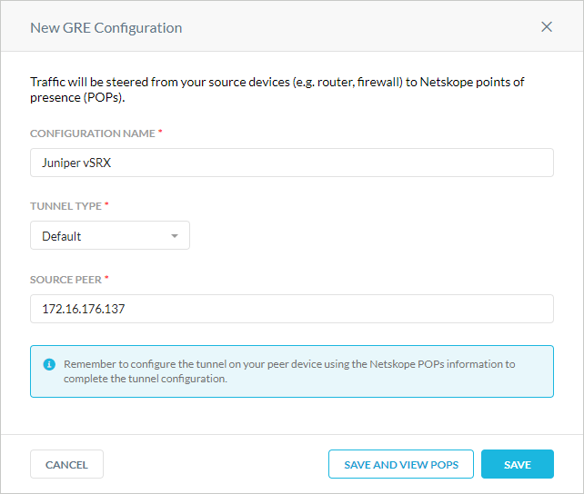
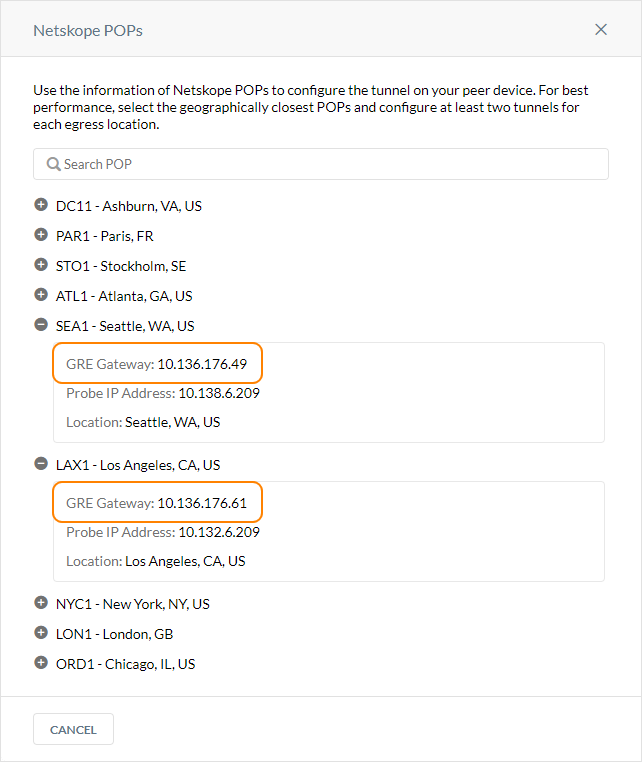

Netskope GRE with Juniper SRX
Netskope supports Generic Route Encapsulation (GRE) tunnels as a traffic steering method. GRE tunnels allow you to route web traffic (port 80 and 443) to Netskope using logical tunnel interfaces that terminate to a Netskope GRE gateway. When you create GRE tunnels in Netskope, parameters for configuring the tunnels are provided. The GRE configuration below utilizes Junos OS commands and concepts.
This guide illustrates how to configure GRE tunnels between Netskope and the Juniper vSRX virtual firewall running Junos OS version 15.1X49-D75.5. To learn more about the CLI steps in Junos OS, see the Juniper documentation.
Prerequisites
Before configuring GRE, review the guidelines and prerequisites.
To create the GRE tunnels for Juniper SRX or vSRX in the Netskope UI:
Go to Settings > Security Cloud Platform > GRE.
Click New GRE Configuration.
In the New GRE Configuration window:
Configuration Name: Enter a name for the GRE tunnel.
Tunnel Type: Select Default.
Source Peer: Enter the source peer IP address (i.e., exit public IP) of the Juniper firewall that Netskope will receive packets from. Netskope identifies traffic belonging to your organization through your router or firewall IP addresses.
Click Save and View POPs.
In the Netskope POPs window, copy the GRE Gateway IP address of the two closest Netskope POPs. You need this information to establish the GRE tunnels on your Juniper firewalls. For optimal performance, Netskope recommends using the geographically closest POPs and configuring at least two tunnels for each egress location in your network.

On the Juniper SRX or vSRX firewall, enter the following commands. Replace the tunnel destination values with the GRE Gateway IP address of the primary and backup Netskope POPs you copied in Create GRE Tunnels in Netskope.
set interfaces gr-0/0/0 unit 0 tunnel source 172.16.176.137 set interfaces gr-0/0/0 unit 0 tunnel destination 10.136.176.49 set interfaces gr-0/0/0 unit 0 family inet mtu 1476 set interfaces gr-0/0/0 unit 0 family inet address 10.100.100.1/24 set interfaces gr-0/0/0 unit 1 tunnel source 172.16.176.137 set interfaces gr-0/0/0 unit 1 tunnel destination 10.136.176.61 set interfaces gr-0/0/0 unit 1 family inet mtu 1476 set interfaces gr-0/0/0 unit 1 family inet address 10.100.200.1/24
Enter the following command:
set security policies default-policy permit-all
Enter the following commands:
set security zones security-zone all host-inbound-traffic system-services all set security zones security-zone all host-inbound-traffic protocols all set security zones security-zone all interfaces all
Enter the following commands:
set routing-options static route 0.0.0.0/0 next-hop 172.16.176.129 set routing-options static route 8.8.8.8/32 next-hop gr-0/0/0.0 set routing-options static route 8.8.8.8/32 next-hop gr-0/0/0.1 set routing-options static route 185.199.0.0/16 next-hop gr-0/0/0.0 set routing-options static route 185.199.0.0/16 next-hop gr-0/0/0.1 set routing-options static route 164.100.133.0/24 next-hop gr-0/0/0.0 set routing-options static route 164.100.133.0/24 next-hop gr-0/0/0.1 set routing-options static route 5.6.7.8/32 next-hop gr-0/0/0.1 set routing-options static route 5.6.7.8/32 next-hop gr-0/0/0.0 set routing-options static route 10.136.176.33/32 next-hop gr-0/0/0.0 set routing-options static route 10.136.176.33/32 next-hop gr-0/0/0.1
Enter the following commands:
set protocols oam gre-tunnel interface gr-0/0/0.0 keepalive-time 5 set protocols oam gre-tunnel interface gr-0/0/0.0 hold-time 10 set protocols oam gre-tunnel interface gr-0/0/0.1 keepalive-time 5 set protocols oam gre-tunnel interface gr-0/0/0.1 hold-time 10
Below is a sample CLI GRE tunnel configuration for Juniper SRX firewalls:
set version 15.1X49-D75.5 set system root-authentication encrypted-password "1234567890" set system name-server 172.16.254.11 source-address 172.16.176.137 set system services ssh set services rpm probe icmp-gre test icmp probe-type icmp-ping set services rpm probe icmp-gre test icmp target address 5.6.7.8 set services rpm probe icmp-gre test icmp probe-count 5 set services rpm probe icmp-gre test icmp probe-interval 5 set services rpm probe icmp-gre test icmp test-interval 10 set services rpm probe icmp-gre test icmp source-address 172.16.176.137 set services rpm probe icmp-gre test icmp thresholds successive-loss 5 set services rpm probe icmp-gre test icmp thresholds total-loss 5 set security policies default-policy permit-all set security zones security-zone all host-inbound-traffic system-services all set security zones security-zone all host-inbound-traffic protocols all set security zones security-zone all interfaces all set interfaces ge-0/0/0 unit 0 family inet address 172.16.176.137/26 set interfaces gr-0/0/0 unit 0 tunnel source 172.16.176.137 set interfaces gr-0/0/0 unit 0 tunnel destination 10.136.176.49 set interfaces gr-0/0/0 unit 0 family inet mtu 1476 set interfaces gr-0/0/0 unit 0 family inet address 10.100.100.1/24 set interfaces gr-0/0/0 unit 1 tunnel source 172.16.176.137 set interfaces gr-0/0/0 unit 1 tunnel destination 10.136.176.61 set interfaces gr-0/0/0 unit 1 family inet mtu 1476 set interfaces gr-0/0/0 unit 1 family inet address 10.100.200.1/24 set interfaces ge-0/0/1 unit 0 family inet address 172.16.176.204/26 set routing-options static route 0.0.0.0/0 next-hop 172.16.176.129 set routing-options static route 8.8.8.8/32 next-hop gr-0/0/0.0 set routing-options static route 8.8.8.8/32 next-hop gr-0/0/0.1 set routing-options static route 185.199.0.0/16 next-hop gr-0/0/0.0 set routing-options static route 185.199.0.0/16 next-hop gr-0/0/0.1 set routing-options static route 164.100.133.0/24 next-hop gr-0/0/0.0 set routing-options static route 164.100.133.0/24 next-hop gr-0/0/0.1 set routing-options static route 5.6.7.8/32 next-hop gr-0/0/0.1 set routing-options static route 5.6.7.8/32 next-hop gr-0/0/0.0 set routing-options static route 10.136.176.33/32 next-hop gr-0/0/0.0 set routing-options static route 10.136.176.33/32 next-hop gr-0/0/0.1 set protocols oam gre-tunnel interface gr-0/0/0.0 keepalive-time 5 set protocols oam gre-tunnel interface gr-0/0/0.0 hold-time 10 set protocols oam gre-tunnel interface gr-0/0/0.1 keepalive-time 5 set protocols oam gre-tunnel interface gr-0/0/0.1 hold-time 10